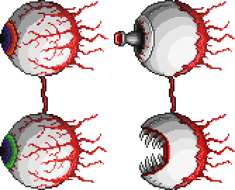

Близнецы являются усложненной версией глаза Ктулху. Они могут быть призваны с помощью механического глаза. Оба глаза имеют свой собственный индивидуальный счетчик жизни. Красный — Ретиназер, стреляет фиолетовым лазером из глаза. Зелёный — Спазматизм, стреляет потоком проклятого пламени. Также, как и Глаз Ктулху, после потери половины здоровья они меняются. Ретиназер меняется когда уровень его здоровья падает до 8,000 HP, а Спазматизм меняется когда уровень его здоровья меньше 9,000 HP.
Оба глаза имеют разные стили боя, Ретиназер становится похож на механический глаз с лазерной башней в зрачке, в то время как Спазматизм становится механическим ртом. После изменения Ретиназер начнет стрелять красными лазерами более агрессивно и наносит больше урона. Он будет чередовать быструю стрельбу на малой скорости передвижения с медленной стрельбой на высокой скорости передвижения. Спазматизм начнет быструю погоню за игроком и будет постоянно извергать пламя из своего рта, подобно огнемету. Проклятый огонь Спазматизма может наложить дебафф «Проклят адом» на игроков